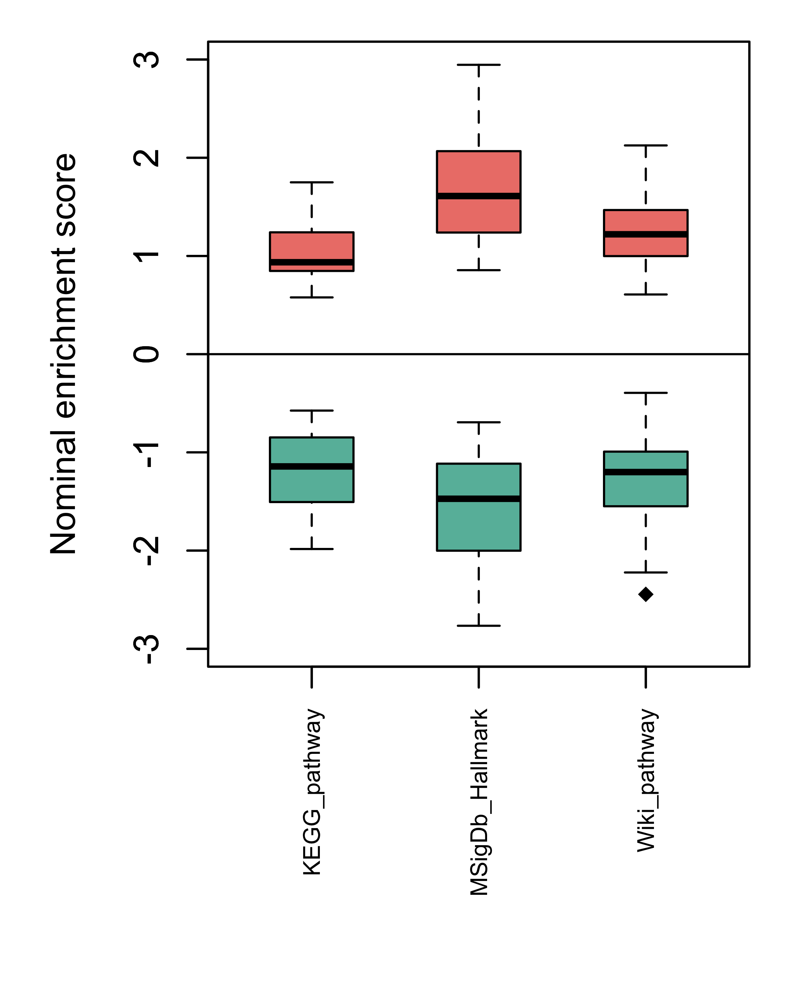
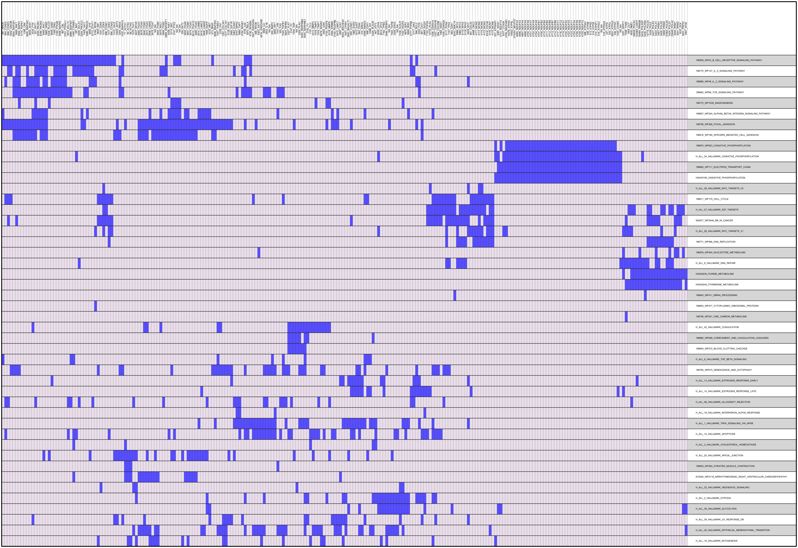

Gene Set Enrichment Analysis
Zhe Zhang
2018-08-13
This procedure runs Gene Set Enrichment Analysis (GSEA) on a transcriptome, or similar, data set. GSEA is a gene set-level analysis that takes into account all genes in the data set after they were ranked by a test statistic of differential expression. The original GSEA was developed by Broad Institute and is usually run as a stand-alone program, using gene set collections obtained from different sources, such as BioSystems and KEGG.
1 Description
1.1 Project
NCI60 tumor cell lines
1.2 Data
Microarray data generated from NCI60. Data was normalized by RMA
2 Results
2.1 Enrichment score
GSEA uses enrichment score and corresponding p value to report the significance of differential expression at gene set level. The generation of enrichment score can be illustrated with an enrichment plot.

Figure 1. Enrichment plot. In an enrichment plot, all genes are ranked on the x-axis according to their differential expression. The color scales from red to blue correspond to the rankings, from the most increased to most decreased differential expression. Each black vertical line along the color scales represents one gene in the gene set to be tested. The overall skewness of these lines towards the right or left is summarized by the green curve, which is called the enrichment profile. The level of skewness The detailed intepretation of enrichment plot can be found here.
GSEA tests each collection of gene sets separately and reports the NES (nominal enrichment score) and p value of each gene set. FDR (false discovery rate) will also be calculated based on the p values within each collection.

Figure 2. Distribution of nominal enrichment scores by gene set collections. Positive and negative scores are plotted separately.
2.2 Leading edge genes
There is often overlapping between gene sets in different collections, such as KEGG and Reactome pathways. As a result, top gene sets reported by GSEA might be redundant if they include the same leading edge genes with the highest levels of differential expression.

Figure 3. Leading edge analyis of top 47 gene sets and genes included by at least 4 of these gene sets. Colored blocks are genes included by the corresponding gene sets.
2.3 View and download results
Download links:
Table 1. Summary of GSEA results. Gene sets were analyzed as collections. Click the links the view GSEA results of individual collections.
| Collection | Gene_Set | Blood > Breast | Breast > Blood |
|---|---|---|---|
| MSigDb_Hallmark | 50 | List | List |
| Wiki_pathway | 219 | List | List |
| KEGG_pathway | 82 | List | List |
Table 2. Top 50 gene sets with the lowest and highest nominal enrichment scores.
| Collection | Gene_set | Size | NES | PValue | FDR | Breast>Blood |
|---|---|---|---|---|---|---|
| MSigDb_Hallmark | H_ALL_28_HALLMARK_MYC_TARGETS_V1 | 176 | -2.7179 | 0.0000 | 0.00000 | No |
| Wiki_pathway | 198843_WP411_MRNA_PROCESSING | 114 | -2.4320 | 0.0000 | 0.00000 | No |
| MSigDb_Hallmark | H_ALL_29_HALLMARK_MYC_TARGETS_V2 | 55 | -2.3479 | 0.0000 | 0.00000 | No |
| Wiki_pathway | 198860_WP111_ELECTRON_TRANSPORT_CHAIN | 81 | -2.2257 | 0.0000 | 0.00000 | No |
| MSigDb_Hallmark | H_ALL_27_HALLMARK_E2F_TARGETS | 193 | -2.1337 | 0.0000 | 0.00000 | No |
| Wiki_pathway | 198853_WP477_CYTOPLASMIC_RIBOSOMAL_PROTEINS | 49 | -2.0930 | 0.0000 | 0.00000 | No |
| Wiki_pathway | 198771_WP466_DNA_REPLICATION | 41 | -2.0925 | 0.0000 | 0.00000 | No |
| MSigDb_Hallmark | H_ALL_46_HALLMARK_ALLOGRAFT_REJECTION | 192 | -2.0817 | 0.0000 | 0.00000 | No |
| Wiki_pathway | 198870_WP623_OXIDATIVE_PHOSPHORYLATION | 51 | -2.0183 | 0.0000 | 0.00000 | No |
| KEGG_pathway | HSA00190_OXIDATIVE_PHOSPHORYLATION | 110 | -2.0002 | 0.0000 | 0.00120 | No |
| MSigDb_Hallmark | H_ALL_34_HALLMARK_OXIDATIVE_PHOSPHORYLATION | 187 | -1.9745 | 0.0000 | 0.00014 | No |
| MSigDb_Hallmark | H_ALL_18_HALLMARK_INTERFERON_ALPHA_RESPONSE | 94 | -1.9204 | 0.0000 | 0.00012 | No |
| Wiki_pathway | 198756_WP241_ONE_CARBON_METABOLISM | 25 | -1.8769 | 0.0000 | 0.00170 | No |
| Wiki_pathway | 198811_WP179_CELL_CYCLE | 98 | -1.8668 | 0.0000 | 0.00200 | No |
| Wiki_pathway | 198876_WP404_NUCLEOTIDE_METABOLISM | 17 | -1.8590 | 0.0000 | 0.00220 | No |
| Wiki_pathway | 198909_WP23_B_CELL_RECEPTOR_SIGNALING_PATHWAY | 155 | -1.8513 | 0.0000 | 0.00200 | No |
| Wiki_pathway | 920977_WP2446_RB_IN_CANCER | 85 | -1.8231 | 0.0000 | 0.00310 | No |
| KEGG_pathway | HSA00230_PURINE_METABOLISM | 163 | -1.8072 | 0.0000 | 0.01300 | No |
| KEGG_pathway | HSA00240_PYRIMIDINE_METABOLISM | 97 | -1.7771 | 0.0000 | 0.01400 | No |
| MSigDb_Hallmark | H_ALL_8_HALLMARK_DNA_REPAIR | 142 | -1.7581 | 0.0000 | 0.00096 | No |
| Wiki_pathway | 198885_WP49_IL_2_SIGNALING_PATHWAY | 42 | -1.7531 | 0.0019 | 0.00980 | No |
| KEGG_pathway | HSA00970_AMINOACYL_TRNA_BIOSYNTHESIS | 43 | -1.7120 | 0.0020 | 0.03000 | No |
| Wiki_pathway | 198770_WP127_IL_5_SIGNALING_PATHWAY | 68 | -1.7075 | 0.0000 | 0.01700 | No |
| Wiki_pathway | 198862_WP69_TCR_SIGNALING_PATHWAY | 87 | -1.7034 | 0.0019 | 0.01700 | No |
| KEGG_pathway | HSA00270_CYSTEINE_AND_METHIONINE_METABOLISM | 33 | -1.6616 | 0.0000 | 0.04400 | No |
| Wiki_pathway | 198828_WP516_HYPERTROPHY_MODEL | 19 | 1.7550 | 0.0062 | 0.02500 | Yes |
| MSigDb_Hallmark | H_ALL_10_HALLMARK_APOPTOSIS | 156 | 1.7604 | 0.0000 | 0.00067 | Yes |
| Wiki_pathway | 198840_WP272_BLOOD_CLOTTING_CASCADE | 20 | 1.7614 | 0.0086 | 0.02600 | Yes |
| KEGG_pathway | HSA00600_SPHINGOLIPID_METABOLISM | 42 | 1.7641 | 0.0021 | 0.11000 | Yes |
| MSigDb_Hallmark | H_ALL_22_HALLMARK_HEDGEHOG_SIGNALING | 34 | 1.7648 | 0.0000 | 0.00061 | Yes |
| Wiki_pathway | 198816_WP185_INTEGRIN_MEDIATED_CELL_ADHESION | 95 | 1.8067 | 0.0000 | 0.01600 | Yes |
| Wiki_pathway | 198772_WP1539_ANGIOGENESIS | 23 | 1.8084 | 0.0022 | 0.01900 | Yes |
| MSigDb_Hallmark | H_ALL_35_HALLMARK_GLYCOLYSIS | 193 | 1.8153 | 0.0000 | 0.00033 | Yes |
| Wiki_pathway | 198780_WP615_SENESCENCE_AND_AUTOPHAGY | 100 | 1.8196 | 0.0000 | 0.02000 | Yes |
| Wiki_pathway | 672454_WP2118_ARRHYTHMOGENIC_RIGHT_VENTRICULAR_CARDIOMYOPATHY | 71 | 1.9330 | 0.0000 | 0.00390 | Yes |
| MSigDb_Hallmark | H_ALL_6_HALLMARK_TGF_BETA_SIGNALING | 53 | 1.9428 | 0.0000 | 0.00000 | Yes |
| Wiki_pathway | 198912_WP98_PROSTAGLANDIN_SYNTHESIS_AND_REGULATION | 28 | 1.9666 | 0.0021 | 0.00260 | Yes |
| Wiki_pathway | 198795_WP306_FOCAL_ADHESION | 176 | 1.9853 | 0.0000 | 0.00220 | Yes |
| MSigDb_Hallmark | H_ALL_14_HALLMARK_ESTROGEN_RESPONSE_LATE | 190 | 1.9899 | 0.0000 | 0.00000 | Yes |
| Wiki_pathway | 198903_WP383_STRIATED_MUSCLE_CONTRACTION | 38 | 2.0084 | 0.0000 | 0.00200 | Yes |
| MSigDb_Hallmark | H_ALL_20_HALLMARK_APICAL_JUNCTION | 192 | 2.0162 | 0.0000 | 0.00000 | Yes |
| Wiki_pathway | 198807_WP244_ALPHA6_BETA4_INTEGRIN_SIGNALING_PATHWAY | 63 | 2.1073 | 0.0000 | 0.00000 | Yes |
| MSigDb_Hallmark | H_ALL_3_HALLMARK_CHOLESTEROL_HOMEOSTASIS | 69 | 2.1398 | 0.0000 | 0.00000 | Yes |
| MSigDb_Hallmark | H_ALL_1_HALLMARK_TNFA_SIGNALING_VIA_NFKB | 195 | 2.1453 | 0.0000 | 0.00000 | Yes |
| MSigDb_Hallmark | H_ALL_13_HALLMARK_ESTROGEN_RESPONSE_EARLY | 193 | 2.1533 | 0.0000 | 0.00000 | Yes |
| MSigDb_Hallmark | H_ALL_42_HALLMARK_COAGULATION | 133 | 2.1881 | 0.0000 | 0.00000 | Yes |
| MSigDb_Hallmark | H_ALL_2_HALLMARK_HYPOXIA | 191 | 2.2756 | 0.0000 | 0.00000 | Yes |
| MSigDb_Hallmark | H_ALL_16_HALLMARK_MYOGENESIS | 193 | 2.3580 | 0.0000 | 0.00000 | Yes |
| MSigDb_Hallmark | H_ALL_39_HALLMARK_UV_RESPONSE_DN | 142 | 2.5685 | 0.0000 | 0.00000 | Yes |
| MSigDb_Hallmark | H_ALL_30_HALLMARK_EPITHELIAL_MESENCHYMAL_TRANSITION | 193 | 2.9737 | 0.0000 | 0.00000 | Yes |
3 Appendix
Check out the RoCA home page for more information.
3.1 References
- R: R Development Core Team, 2011. R: A Language and Environment for Statistical Computing. ISBN 3-900051-07-0. Home page.
- Bioconductor: Gentleman RC et al., 2004. Bioconductor: open software development for computational biology and bioinformatics. Genome Biology. Home page.
- GSEA: Subramanian A et al. 2005 Gene set enrichment analysis: A knowledge-based approach for interpreting genome-wide expression profiles PNAS. Home page
- RoCA
- Awsomics
3.2 Reproduce this report
To reproduce this report:
Find the data analysis template you want to use and an example of its pairing YAML file here and download the YAML example to your working directory
To generate a new report using your own input data and parameter, edit the following items in the YAML file:
- output : where you want to put the output files
- home : the URL if you have a home page for your project
- analyst : your name
- description : background information about your project, analysis, etc.
- input : where are your input data, read instruction for preparing them
- parameter : parameters for this analysis; read instruction about how to prepare input data
- Run the code below within R Console or RStudio, preferablly with a new R session:
if (!require(devtools)) { install.packages('devtools'); require(devtools); }
if (!require(RCurl)) { install.packages('RCurl'); require(RCurl); }
if (!require(RoCA)) { install_github('zhezhangsh/RoCAR'); require(RoCA); }
CreateReport(filename.yaml); # filename.yaml is the YAML file you just downloaded and edited for your analysisIf there is no complaint, go to the output folder and open the index.html file to view report.
3.3 Session information
## R version 3.3.3 (2017-03-06)
## Platform: x86_64-apple-darwin13.4.0 (64-bit)
## Running under: OS X Yosemite 10.10.5
##
## locale:
## [1] en_US.UTF-8/en_US.UTF-8/en_US.UTF-8/C/en_US.UTF-8/en_US.UTF-8
##
## attached base packages:
## [1] grid parallel stats4 stats graphics grDevices utils
## [8] datasets methods base
##
## other attached packages:
## [1] xlsx_0.5.7 xlsxjars_0.6.1 rJava_0.9-9
## [4] DEGandMore_0.0.0.9000 snow_0.4-2 awsomics_0.0.0.9000
## [7] rchive_0.0.0.9000 colorspace_1.3-2 flexclust_1.3-4
## [10] modeltools_0.2-21 lattice_0.20-34 PGSEA_1.48.0
## [13] annaffy_1.46.0 KEGG.db_3.2.3 GO.db_3.4.0
## [16] pathview_1.14.0 org.Hs.eg.db_3.4.0 AnnotationDbi_1.36.2
## [19] IRanges_2.8.2 S4Vectors_0.12.2 Biobase_2.34.0
## [22] BiocGenerics_0.20.0 gplots_3.0.1 MASS_7.3-45
## [25] htmlwidgets_0.9 DT_0.2 yaml_2.1.16
## [28] kableExtra_0.9.0 knitr_1.18 rmarkdown_1.10.3
## [31] RoCA_0.0.0.9000 RCurl_1.95-4.9 bitops_1.0-6
## [34] devtools_1.13.4
##
## loaded via a namespace (and not attached):
## [1] httr_1.3.1 jsonlite_1.5 bit64_0.9-7
## [4] viridisLite_0.2.0 gtools_3.5.0 highr_0.6
## [7] blob_1.1.0 pillar_1.1.0 RSQLite_2.0
## [10] backports_1.1.2 digest_0.6.13 XVector_0.14.1
## [13] rvest_0.3.2 htmltools_0.3.6 plyr_1.8.4
## [16] XML_3.98-1.9 pkgconfig_2.0.1 zlibbioc_1.20.0
## [19] scales_0.5.0 gdata_2.18.0 tibble_1.4.2
## [22] KEGGREST_1.14.1 withr_2.1.1 magrittr_1.5
## [25] memoise_1.1.0 evaluate_0.10.1 KEGGgraph_1.32.0
## [28] xml2_1.1.1 graph_1.52.0 rsconnect_0.8.5
## [31] tools_3.3.3 hms_0.4.0 stringr_1.2.0
## [34] munsell_0.4.3 Biostrings_2.42.1 caTools_1.17.1
## [37] rlang_0.1.6 rstudioapi_0.7 DBI_0.7
## [40] R6_2.2.2 bit_1.1-12 rprojroot_1.3-2
## [43] KernSmooth_2.23-15 readr_1.1.1 Rgraphviz_2.18.0
## [46] stringi_1.1.6 Rcpp_0.12.14 png_0.1-7END OF DOCUMENT